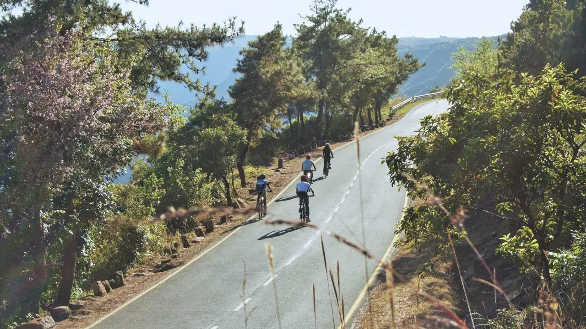

Overview
Ride the cloud-catching hills of Meghalaya
This cycling tour takes you through Meghalaya's hill country, a state shaped by monsoon clouds, deep green valleys, limestone caves, waterfalls and distinctive village cultures.
The route can focus on the Khasi Hills or extend deeper into Garo, Khasi and Jaintia landscapes.
Expect hilly roads, village markets, living root bridges, local food traditions and wide views toward Bangladesh.
Ride Details
Route character

Journey Flow
The tour in sections
This is an indicative flow. The final route is shaped around your dates, pace, group profile and local conditions.
The Jaintia Plateau
Begin on the high plateau of eastern Meghalaya, riding through rolling hill roads, limestone country, small settlements and open ridgelines that reveal the scale of the landscape.
The Bangladesh border
Drop toward the southern edge of Meghalaya, where the hills fall sharply toward the plains of Bangladesh. This section brings dramatic viewpoints, humid valleys, waterfalls and a clear shift in terrain.
Root bridges and whistling villages
Move through forested villages, living root bridge country and communities known for their distinctive traditions, including whistling villages. The riding slows into a deeper encounter with Meghalaya's people, forests and paths.
Detailed itinerary
Ask for the full route plan and cost
The itineraries are unique, so the detailed route and cost are shared directly after understanding your dates, pace and group size.
Photo Gallery
Moments from the Abode of Clouds
Enquire
Plan Cycle Tour of Meghalaya
Share a few details and we will get back to you with the best route, duration and cost options.